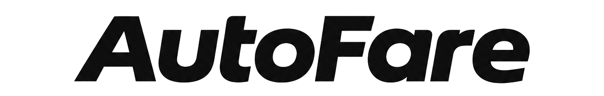
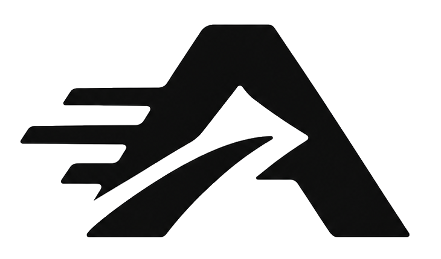

ما تلحق ع الطلبات.
خلّي AutoFare يلحق إلك.
تل الرمان ← الصويفية
الزبون على بعد 4 دقايق · الرحلة 14 دقيقة
أعلى بـ 2.2 ضعف من حدّك — ما كان في داعي تفكّر.
بتسكّر لحالها · اضغط لو بدك ترجع
تل الرمان ← الصويفية · 4 دقايق · 1.30 للدقيقة
السعر تحت الحد · طلبت 3.00 وإجا 2.10
الجاردنز ← خلدا · دقيقة وحدة للزبون
الزبون بعيد · 11 دقيقة وإنت حاطط 5
من الصبح شفنا 23 طلب ورفضنا 14. ربحك بالساعة أعلى 39% من متوسطك.
إحنا منقرّر بدالك — إنت بس حدّد شو بدك.
مطفي. منراقب الطلبات وما منضغط ولا شي.
بترا رايد بتبعت طلبات مكافأة بدون سعر. إذا شغّلتها منقبلها حسب الوقت بس.
القواعد تُحفظ لحالها — ما في زر حفظ.
هاد الأسبوع · 18 — 24 تشرين
أحسن ساعاتك 4 — 7 العصر. لو شغّلت ساعتين زيادة بهالوقت بدل الصبح، تقديرنا بتكسب +46 د.أ بالأسبوع.
لو نزّلت الحد من 3.00 لـ 2.60 كنت قبلت 23 طلب زيادة — بس ربحك بالساعة كان نزل 0.8 د.أ. إعدادك هلق أحسن.
الأذونات والاشتراك.
ادفع بـ CliQ أو زين كاش · التفعيل فوري
سجّل شاشات تطبيقات الرحلات وأرسلها — عشان نبني القبول التلقائي.
يفتح غامق لما الجهاز يصير غامق.
طفّي "اتبع إعدادات الجهاز" عشان تتحكّم فيه بإيدك.
تحكّم سريع وإنت داخل تطبيق الرحلات.
نغمة قصيرة لما نقبل طلب.
هزّة خفيفة — بتعرف إنه الطلب إجا وانرفض.
AutoFare 0.4-auto · عمّان
منسجّل شو بتعرض تطبيقات الرحلات، وبس. ما منقبل ولا منرفض أي طلب بهالنسخة.
لما يشتغل، كل ما تفتح شاشة بتطبيق الرحلات منسجّلها بملف ع جهازك.
خلّيها مفتوحة — أسماء تطبيقات الرحلات لسا تخمين، وهيك ما منفوّت إشي. الواتس والإيميل والبنوك ما منسجّلهم أبداً.
الملف بينحفظ ع جهازك بس. ما بينرسل لحدا إلا لما تضغط شارك.
me.com.easytaxistacom.PetraRide_Captaincom.careem.captaincom.ubercab.driverالأسماء فوق تخمين. اضغط الزر واختار تطبيق الرحلات من ع جهازك، وبصير متأكد.
من 3.00 وفوق
ربح بالدقيقة 0.60
مطابق لكود v0.4-auto. الإعدادات صارت تبويب بالشريط السفلي، ووضع التعلّم
لحاله بينفتح من جوّاها. الأرقام هون تمثيلية — بالتطبيق بتيجي من قاعدة بيانات
SQLite، وقبل ما يصير في شغل محفوظ بتطلع فاضية (تقييم اليوم بيقول «لسا بدري»،
والنِسب بتطلع «—») بدل ما تخترع أرقام.
★ لحظة القبول والزر العائم تصميم بس، لسا ما انبنوا — وهدول لسا بالشكل القديم.